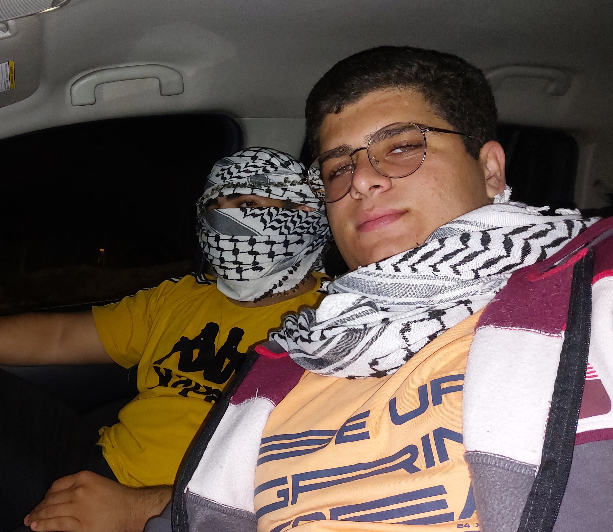

My CV

About Me :
- Full name :- Abdelaziz M. M. Adili
- address :-
- streat :- salem elzare'a el'adwan
- nieborhood :- shafabdran, alkom
- city,contry :- Amman, Jordan
- Contact Information
Education :
- Schools :-
- el'olya school in Riyadh, Saudi Arabia (2012-2014)
- el'royad school in Amman, Jordan (2015)
- el'khalej school in Riyadh, Saudi Arabia (2015-2023)
- University Studies:-
- Princes Sumia Univerdity For Tech
[Computer Science Degree] (2023-2027)
Work Experience :
- Amazon :- full Stack developer (2024-2025)
- responsibilities :-
responsable for update the amazon website
- Mena Arabia :- Backend developer / Servers Administrator (2025 1'st half)
- responsibilities :-
responsable for conect the backend of the website to servers
- Oryx Company :- frontend developer / hardware specialist (2025 2'sec half)
- responsibilities :-
responsable about hardware in the office and frontend part of our website
Skills :
- Problem Solving
- Adaptability
- Critical thinking
- Teamwork
Awards & certifications :
- JCPC 2024 5'th place
- ACPC 2025 19'th place
- Meta hack me 2025 13'th place